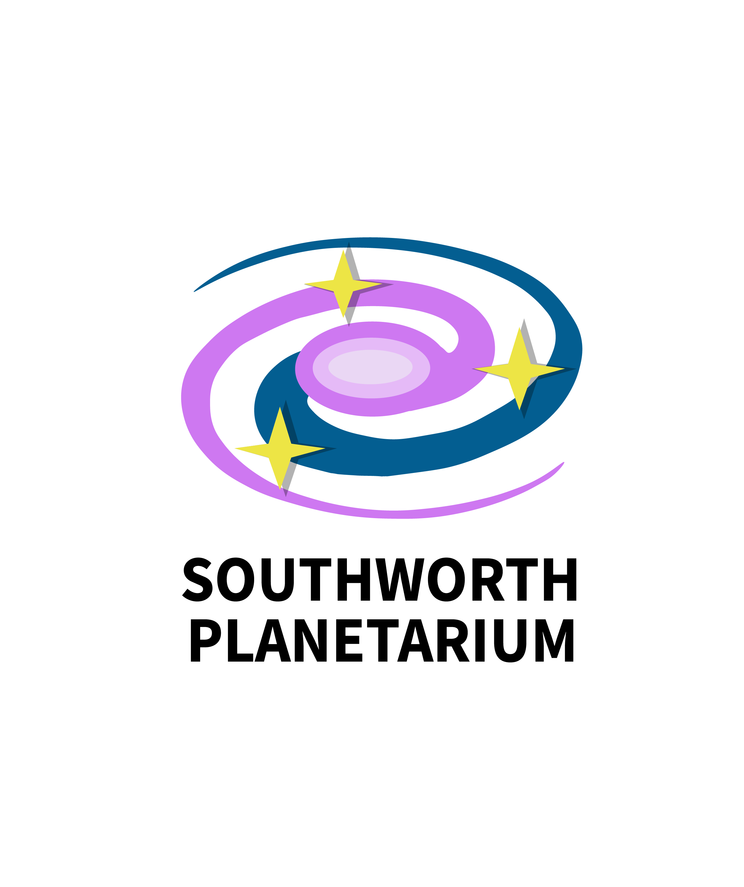
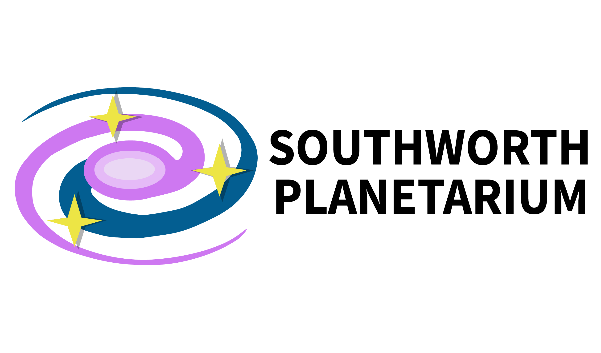
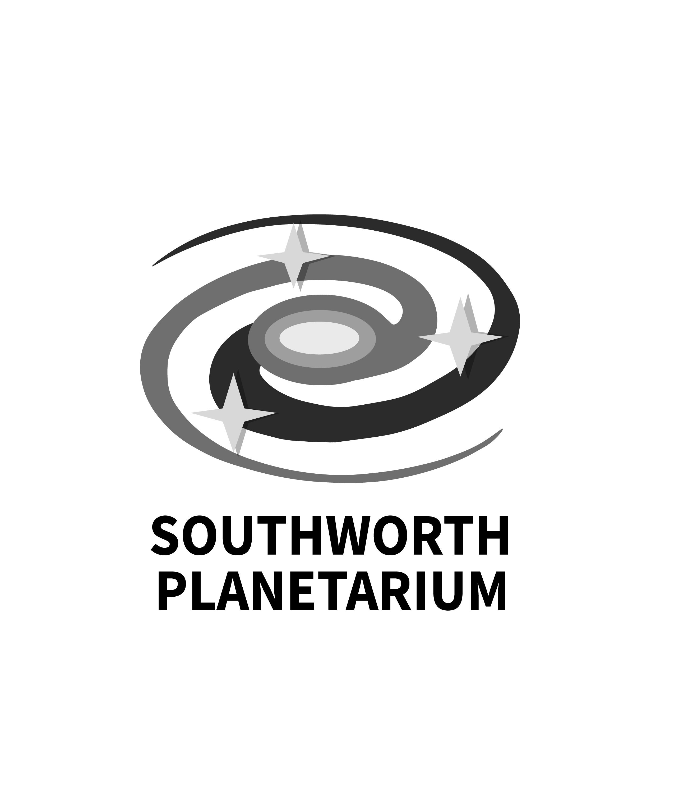

Project 1: Southworth Planetarium Logos
My inspiration for this logo design came from the concept of the mesmerizing visual associated with celestial elements. I wanted to create a design that felt dynamic and engaging while also being professional. The motion of the purple and blue swirls represents the movement of celestial objects, and the yellow stars add a touch of whimsy aesthetic and connection to the planetarium. I started with some rough sketches, exploring different concepts of curves and stars. Once I had a design that I was happy with, I moved to Adobe Illustrator and started creating the logo. I used the tools to create clean shapes and played with the colors. I went with purple and blue because those are the colors that are usually associated with space. When it came to typography, I wanted it to complement the logo without overtaking it so I went with a bold, sans-serif font.
  Project 2: Photo Manipulation Scenes
My main goal for this project was to create a utopia that reflected my world of warmth, peace, and positivity. I wanted to design a space that felt both whimsical and inviting, a place I would love to escape, especially during the current events happening in the world right now. The concept of an alternate world naturally led me to consider elements that bring me comfort such as lots of cats, nature, and a warm color palette filled with vibrant flowers. These are the first aspects I thought of that became the foundation of my two scenes, which depict a surreal paradise with floating islands, cozy environments, and an abundance of furry friends. I am currently reading a fantasy romance series, so my inspiration stemmed from a combination of fantasy landscapes that I got from those books, as well as my love for cozy, nature-filled spaces. I envisioned a world that merges reality with mystical elements, blending the beauty of brightly colored gardens with floating islands, dreamy lighting, and a sense of peace. I also took inspiration from the idea of a cat’s paradise, where they could roam freely, leap between mystical platforms, and relax in the hidden nooks of the trees. I wanted my utopia to feel both adventurous and peaceful. The process of turning these ideas into artwork involved careful composition and layering. I started by selecting a background that conveyed an ethereal quality such as sunset skies, dense forests, and vibrant landscapes. Then, I introduced floating islands and ladders to create a mystical vertical world, making the environment feel expansive. For the second scene, I focused on a cozy atmosphere within a hollowed-out tree, using small details like fairy lights, books, and a plush couch to enhance the inviting “homey” ambiance. Color played a crucial role in unifying my alternate world. I leaned into warm tones, golden hues, pinkish skies, and the rich greens of plants to create a comforting and dreamlike aesthetic. The vibrant flowers helped make the landscapes feel alive, while the soft, glowing lights in the second scene added a sense of warmth and intimacy.